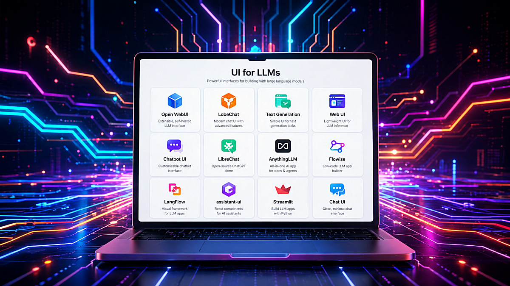

Open-source user interfaces for Large Language Models have become an important part of the modern AI stack. They are no longer just simple chat windows. Today, an LLM interface can be a local model launcher, a RAG workspace, an agent builder, a document assistant, a testing console, or even the frontend layer of a production AI product.
For developers, researchers, small teams, and companies experimenting with private AI infrastructure, these tools solve a practical problem: they make LLMs usable without forcing every project to start from a blank frontend, authentication system, chat history database, file upload pipeline, or API integration layer.
Some interfaces are designed for quick prototyping. Others are closer to full AI workspaces. Some focus on local models through Ollama, llama.cpp, or text-generation backends. Others connect many cloud providers behind a single frontend. A few are better understood not as “chat UIs” but as low-code orchestration environments for RAG and agents.
Below is a practical overview of the most useful open-source or source-available LLM interfaces, starting with Gradio, which deserves a special place because of how fast it lets developers turn a model, API, or Python function into a usable web application.
Best for rapid AI demos, internal tools, model testing, research prototypes, small custom LLM apps.
Gradio is one of the fastest ways to build a working user interface around a machine learning model or LLM pipeline. Instead of creating a frontend with React, Vue, or Svelte, a developer can write a few lines of Python and expose a model through a browser-based interface. The official Gradio description focuses exactly on this: building machine learning apps in Python and sharing or deploying them quickly.
For LLM work, Gradio is especially useful because it provides ready-made components such as ChatInterface, Chatbot, text boxes, file uploaders, sliders, dropdowns, audio inputs, image inputs, galleries, and dataframes. The Chatbot component supports formatted chat messages and can display text, Markdown-like formatting, images, audio, video, and files.
Technically, Gradio is not only a “demo tool.” It can become a lightweight application layer around:
A typical Gradio LLM app may contain a Python function that receives the user message and chat history, sends the prompt to a model backend, streams or returns the response, and updates the UI. For more control, developers can use Blocks, which allows building custom layouts with multiple inputs, tabs, buttons, state objects, and event handlers.
Gradio is especially strong when the developer wants to test an idea before building a full product. For example, if you are training a small language model, fine-tuning a GPT-style model, testing a RAG pipeline, or comparing prompts, Gradio can become a convenient browser UI almost immediately.
Technical strengths:
gr.ChatInterface();Limitations:
Gradio is not a full multi-user ChatGPT clone by default. It does not automatically provide advanced user management, long-term conversation storage, team workspaces, document permissions, or enterprise-style admin controls. Those can be added, but if the goal is a complete self-hosted AI workspace, tools like Open WebUI, LibreChat, or AnythingLLM may be more ready out of the box.
GitHub Link: https://github.com/gradio-app/gradioBest for: self-hosted ChatGPT-like experience, Ollama users, local/cloud model switching, private AI chat.
Open WebUI is one of the most popular self-hosted interfaces for interacting with local and cloud-based LLMs. It is designed to work offline and supports Ollama as well as OpenAI-compatible APIs, making it useful for both private local setups and provider-agnostic deployments.
From a technical perspective, Open WebUI is attractive because it gives users a complete AI chat environment without requiring them to build frontend, backend, chat history, model selection, or file interaction from scratch. Its documentation describes support for conversations, model switching, file attachments, web search, code execution, and tool usage from the same interface.
Open WebUI is often used with Ollama because Ollama makes local model serving simple, while Open WebUI provides the browser experience on top of it. This combination is practical for users running models like Llama, Qwen, Mistral, Gemma, Phi, or small custom models locally.
Technical strengths:
Limitations:
Open WebUI is more of a complete application than a small framework. If you want to deeply customize the UX or embed the chat UI into your own product, a React component library such as assistant-ui may be easier to adapt. Also, licensing and “open-source” status should be checked carefully for any project before commercial use.
GitHub Link: https://github.com/open-webui/open-webuiBest for multi-provider self-hosted AI chat, agents, MCP, enterprise-like chat workflows.
LibreChat is a self-hosted AI chat platform focused on unifying multiple model providers in one interface. Its GitHub description highlights support for AI agents, Model Context Protocol, artifacts, code interpreter, custom actions, conversation search, and multi-user authentication.
LibreChat is technically interesting because it is closer to a full AI application platform than a simple frontend. It can connect to different providers, organize conversations, support more advanced assistant workflows, and expose configuration through files such as librechat.yaml. The documentation notes that this configuration can define custom AI endpoints, model settings, interface options, MCP servers, and agent-related features.
The MCP support is especially important for modern agentic systems. LibreChat can use MCP servers either in the chat area or with agents, allowing the assistant to interact with external tools through a standardized protocol.
Technical strengths:
Limitations:
LibreChat is more complex than Gradio or Streamlit. It is better suited for users who actually need multi-user features, provider routing, agents, or advanced configuration. For a simple one-model demo, it can be more infrastructure than necessary. Also, as with any open-source project, the license and commercial use terms should be reviewed before using it in a product.
GitHub Link: https://github.com/danny-avila/LibreChatBest for: private document chat, RAG workspaces, no-code AI knowledge bases.
AnythingLLM is an all-in-one AI application for chatting with documents, building RAG workspaces, and using agents without needing to assemble every infrastructure piece manually. Its documentation describes it as an application for RAG, AI agents, and related workflows, while the GitHub overview emphasizes local/cloud LLM connections, document ingestion, vector databases, multi-user support, and document pipelines.
The main technical idea behind AnythingLLM is that a user can create workspaces, upload documents, embed them into a vector database, and then chat with those documents using a selected LLM. This is useful for internal documentation, project notes, manuals, PDFs, support knowledge bases, research collections, and company-specific assistants.
AnythingLLM supports multiple vector database options, and the documentation warns that changing vector databases later may require re-embedding documents. That detail matters because RAG systems are not just UI projects: they depend on embeddings, chunking, vector storage, retrieval strategy, and re-indexing workflows.
Technical strengths:
Limitations:
AnythingLLM is excellent when document chat is the core use case. If the goal is low-level model experimentation, custom training evaluation, or a highly customized frontend, Gradio, Streamlit, or assistant-ui may offer more flexibility.
GitHub Link: https://github.com/Mintplex-Labs/anything-llmBest for: polished AI chat UI, multi-provider chat, multimodal workflows, plugin-oriented user experience.
LobeChat is a modern AI chat interface with a polished design and broad provider support. It is often positioned as a full-featured ChatGPT-like frontend with support for different LLM providers, local models, plugins, and multimodal interactions. Its GitHub page mentions multimodal capabilities such as visual recognition support, where users can upload images and interact with models that understand visual content.
The strength of LobeChat is the frontend experience. It looks and feels closer to a polished consumer AI application than a basic developer demo. That makes it attractive for users who care about design, usability, and a clean conversational interface.
Technically, LobeChat can fit well when a team wants a ready-made AI chat experience with provider switching and extensibility. It is less about building arbitrary Python pipelines and more about providing a high-quality user interface around modern model providers.
Technical strengths:
Limitations:
For deeply custom backend logic, model training tools, or Python-first experimentation, LobeChat may be less direct than Gradio or Streamlit. Before using it commercially, check the project’s current license and deployment terms.
GitHub Link: https://github.com/lobehub/lobe-chatBest for: local model experimentation, prompt testing, model loading options, research and hobbyist workflows.
Text Generation Web UI, often known as oobabooga, is one of the classic local LLM interfaces. It is popular among users who want to run models locally, test different prompt formats, use character/chat modes, and experiment with model loading backends.
The project supports chat and instruct modes, Jinja2 prompt templates, multimodal attachments, file attachments, message editing, conversation branching, and notebook-style text generation outside normal chat turns.
This makes it useful for people who want more control over generation settings than typical polished chat products provide. Parameters such as temperature, top-p, top-k, repetition penalty, prompt templates, context length, and model loader choices are often important during local model testing.
Technical strengths:
Limitations:
It is more technical and less product-like than Open WebUI or LobeChat. It is great for experimentation, but not always the first choice for a clean team-facing AI assistant.
GitHub Link: https://github.com/oobabooga/text-generation-webuiBest for: developers who want a ChatGPT-style frontend starter.
Chatbot UI is a frontend-oriented project for building an AI chat experience. It is useful when the goal is not necessarily to run local models directly, but to start from an existing chat application structure and adapt it.
The GitHub repository provides local quickstart instructions, and the project is commonly associated with a modern web stack rather than a Python-first workflow.
This kind of tool is valuable when you want to build your own AI product but do not want to design the entire chat interface from zero. It can serve as a starting point for chat history, message layout, model selection, API calls, and user experience patterns.
Technical strengths:
Limitations:
Chatbot UI is more of a starting point than a complete AI platform. You may need to implement or adapt authentication, billing, storage, RAG, tools, model routing, and deployment details depending on your use case.
GitHub Link: https://github.com/mckaywrigley/chatbot-uiBest for: visual LLM workflows, RAG pipelines, agents, low-code orchestration.
Flowise is different from a normal chat UI. It is a visual development platform for building LLM applications, chatflows, assistants, and agent workflows. Its documentation describes it as an open-source generative AI development platform with a visual builder, tracing and analytics, evaluations, human-in-the-loop features, API/CLI/SDK support, and embedded chatbot options.
Flowise is useful when the key problem is not “how do I chat with a model?” but “how do I connect a model, tools, prompts, memory, retrievers, APIs, and decision logic into a workflow?” It can be used to create RAG systems, agentic pipelines, and chatbot backends that are later embedded into other applications.
Flowise documentation also includes tutorials for RAG and agentic RAG, where retrieval is combined with more advanced logic such as query regeneration, relevance checking, and self-correction.
Technical strengths:
Limitations:
Because Flowise can execute complex workflows and integrate external tools, deployment security matters. As with any publicly exposed low-code automation platform, it should be kept updated, protected behind authentication, and not casually exposed to the public internet.
GitHub Link: https://github.com/FlowiseAI/FlowiseBest for: visual AI application development, RAG, agents, MCP, Python-based customization.
LangFlow is another visual framework for building AI applications. Its documentation describes it as an open-source, Python-based, customizable framework that supports agents, MCP, and different LLMs and vector stores without forcing one specific provider.
LangFlow is useful for building RAG pipelines, agent workflows, and AI applications through a visual editor. It sits somewhere between a developer framework and a low-code environment. The visual interface helps with prototyping, while the Python-based architecture gives developers room to customize.
The official site also emphasizes building and deploying AI agents and MCP servers, with support for major LLMs, vector databases, and AI tools.
Technical strengths:
Limitations:
Like Flowise, LangFlow is most valuable when you need workflows, not just a chat box. If all you need is a simple interface for one model, it may be more complex than necessary.
GitHub Link: https://github.com/logspace-ai/langflowBest for: building production-grade AI chat interfaces inside React/Next.js apps.
assistant-ui is not a full AI platform. It is a TypeScript/React library for building AI chat interfaces. Its documentation describes it as a way to create enterprise-grade AI chat interfaces for React, React Native, and terminal applications.
This makes assistant-ui very different from tools like Open WebUI or AnythingLLM. Instead of giving you a complete app, it gives you frontend primitives and state management for chat experiences. Its GitHub description highlights production-grade AI chat UX, streaming, auto-scrolling, accessibility, and related frontend behavior.
Technical strengths:
Limitations:
assistant-ui does not solve the whole backend. You still need model serving, API routes, authentication, database storage, RAG, tools, and deployment logic.
GitHub Link: https://github.com/assistant-ui/assistant-uiBest for: Python dashboards, LLM prototypes, internal evaluation tools, simple chat apps.
Streamlit is another Python-first tool that works very well for LLM apps. It is often used for dashboards, data apps, and internal tools, but its chat elements make it practical for conversational AI prototypes too.
The official Streamlit documentation includes st.chat_input and st.chat_message, which are designed for building conversational apps and chat interfaces. Chat containers can include text, charts, tables, and other Streamlit elements, which makes Streamlit useful when the LLM output is part of a larger analytical workflow.
Compared with Gradio, Streamlit often feels more like an app/dashboard framework. It is excellent when you want to combine an LLM with dataframes, plots, filters, file upload, evaluation metrics, logs, or admin controls.
Technical strengths:
Limitations:
Streamlit is not primarily a polished ChatGPT clone. It is better for internal tools, prototypes, dashboards, and developer-facing AI applications.
GitHub Link: https://github.com/streamlit/streamlitThe best LLM interface depends on what you are building.
For fast Python prototypes, choose Gradio or Streamlit.
For local private AI chat, choose Open WebUI.
For multi-provider self-hosted ChatGPT-like workflows, choose LibreChat.
For document chat and RAG workspaces, choose AnythingLLM.
For polished self-hosted AI chat, choose LobeChat.
For local model experimentation, choose Text Generation Web UI / oobabooga.
For custom React/Next.js AI products, choose assistant-ui or Chatbot UI.
For visual RAG and agent workflows, choose Flowise or LangFlow.
The open-source LLM UI ecosystem is becoming more specialized. A few years ago, most tools were simple wrappers around a text generation endpoint. Now the space includes Python demo frameworks, self-hosted ChatGPT alternatives, RAG workspaces, visual agent builders, React component libraries, and local model laboratories.
That is good news for developers. It means you no longer need to build every layer manually. You can choose the right abstraction level:
For small language models, local inference, embedded AI experiments, and private deployments, these interfaces are especially valuable. They turn raw model endpoints into usable systems — and in real projects, that usability layer is often what makes the difference between an interesting model and a working AI product.